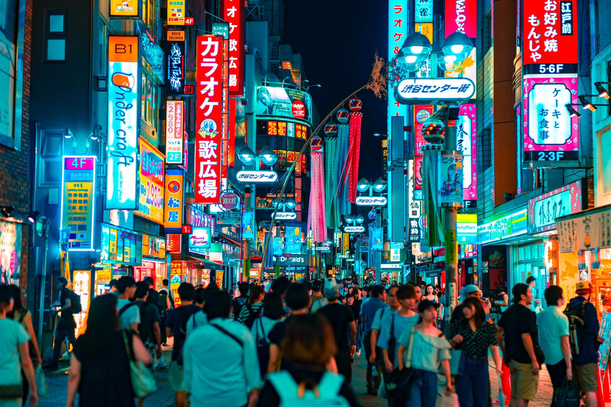
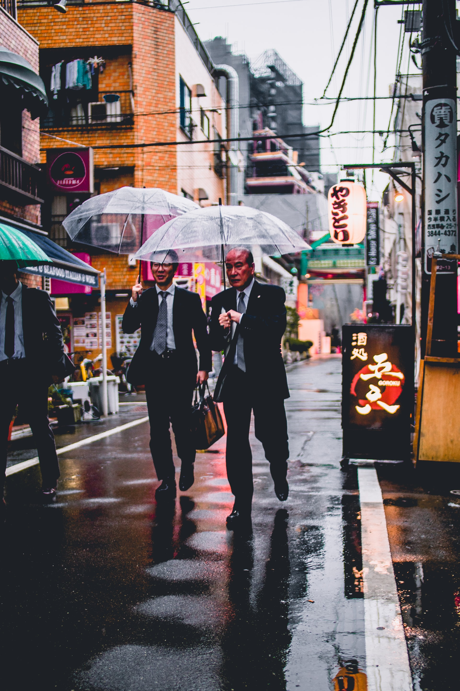

Japanese people appear at first glance to be one of the most socially and ethnically homogenous groups in the world.
It is reasonable to equate Japan's rapid post-war economic development to the 1990s with social solidarity and conformism. Despite labour shortages since the 1960s, authorities resisted officially sanctioning foreign workers until the 1980s, relying on increased mechanisation and an expanded female workforce instead.
Until recently, Japanese workers have associated themselves primarily with the company they work for - a businessman will introduce himself as "Nissan no Takahashi-san" (I am Nissan's Mr Takahashi). By extension, we might get the idea that a Japanese person subordinates the self to the objectives of society.
In 2008, however, long-serving Japanese politician Nariaki Nakayama resigned after declaring that Japan is "ethnically homogenous", showing that the old "one people, one race" idea has become politically incorrect.
Lifestyles in Japan changed dramatically after World War II, when large numbers of people moved from the countryside to the cities to make their living as office workers. As cities grew in both size and population, more and more people commuted from their apartments or houses in the suburbs to their workplaces in central areas. While a traditional Japanese household consists of three or more generations of the same family living under one roof, urban households today tend to consist of parents and children, with grandparents living elsewhere.
